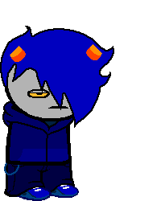

Lord of Light
Full name: Osamco Negtiv
Trolltag/Chumhandle: cloverDebauchery
Quirk: THe QUIcK BrOWN FOX JUMPS Over THe lAZY DOG.
Associated Colour: #0b5394
Session: Cloth
Dancestor: WorldEnder
Modus: Doomed Modus
(Every timeline he destroys grants him 1 more slot.)
Strife Specibus: Winegnkind
Server: Self
Client: Self
Matesprit: N/A
Kismisis: N/A
Morail: N/A
Auspistice: N/A
Land:
Your land is the LAND OF ??? AND ???. Your session is a DEAD SESSION. Your Kernelsprite collapsed into a black hole, which served as your entry to the MEDIUM. Soon after, SKIA crumbled into fifteen individual planets, seven of which fell into the black hole immediately. Your denizen is FORTUNA, and The Choice gave you the chance of stealing luck from all the other timelines, or the other vise versa, excluding the Alpha Timeline. You are also a doomed version of OSAMCO NEGTIV.
Notes 1:
Notes 2: